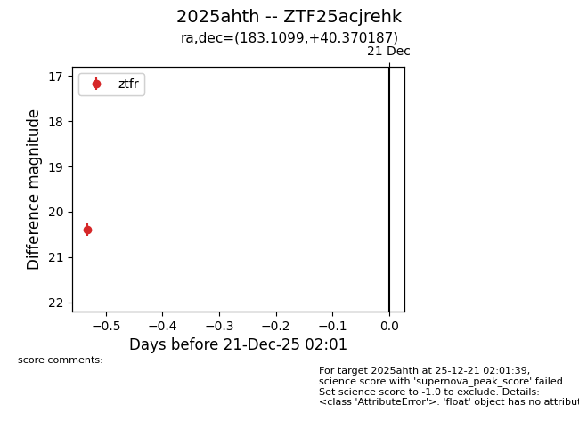
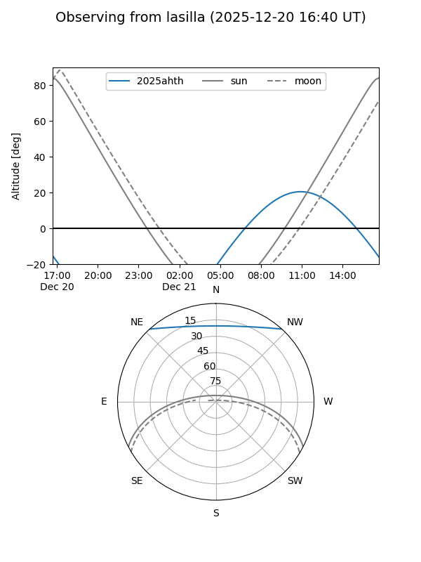
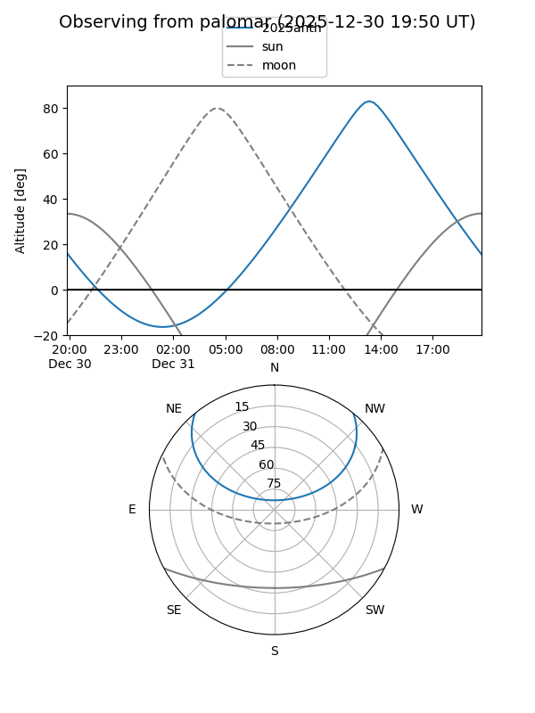

2025ahth
Target 2025ahth at 2025-12-31 17:00
Aliases and brokers:
FINK:
Lasair:
ALeRCE:
TNS:
YSE:
alt names
ZTF25acjrehk (ztf,fink_ztf)
2025ahth (tns,yse)
Coordinates:
equatorial (ra, dec) = 183.1099,+40.37019
equatorial (HMS+DMS) = 12:12:26.39,+40:22:12.67
galactic (l, b) = (151.7939,+74.49746)
Flags:
Photometry:
last ztfr=20.39
1 ztfr detections
Lightcurve

Visibility


Additional plots